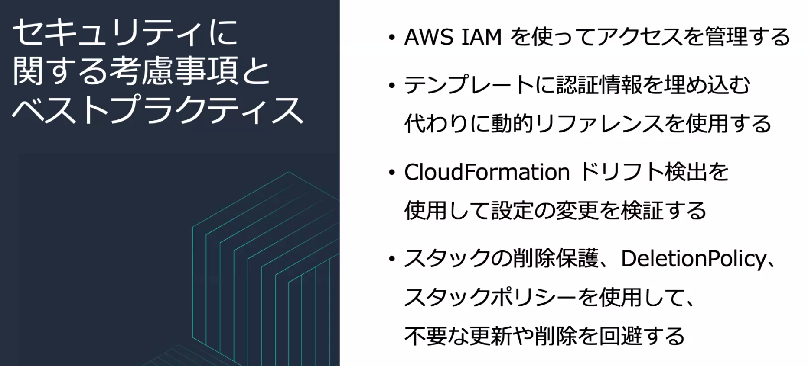
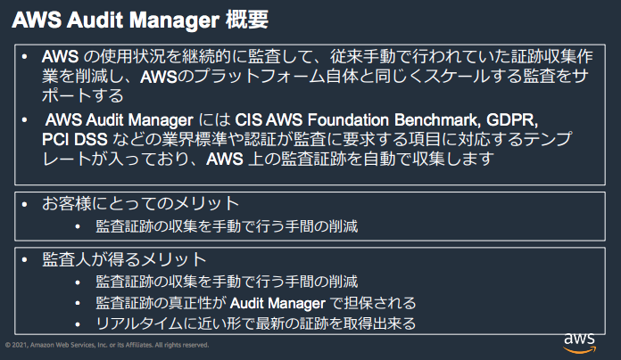

Security by Design
- 「設計によるセキュリティ (SbD)」で AWS アカウント設計の正式 化、セキュリティ制御の自動化、監査の簡素化を可能にする。
- 基本的な構造を自動化して AWS 環境のセキュリティとコンプライアンスをコード化。
- セキュアで反復可能なアプローチを作成することで、インフラストラクチャの特定の制御要素をキャプチャ、保護、制御することができる。
- ステップ 4 の監査は AWS Config などで実現。その構成も CloudFormation で構築され、Service Catalog で強制される。
CloudFormation

- Infrastructure as Code (IoC) でインフラの構成変更を追跡
コンプライアンス準拠とガバナンスをレイヤー化したモジュラー設計を CloudFormation スタックで実現
- スタック 1: 各アカウントに適用される基本的なセキュリティテンプレート。共通の IAM ユーザー、ロール、グループ、関連付けられたポリシーがデプロイされます。CloudTrail 等のモニタリング設定もこのレイヤーで展開。
- スタック 2: VPC 構成をデプロイする一般的なユースケース向けのテンプレート。VPC ピア接続、 NAT インスタンス、IGW および VGW (Virtual Private Gateway) といった接続オプションを考慮して作成される。
- スタック 3: 特定のアプリケーションアーキテクチャ共通のテンプレート。ELB TLS 設定、共通セ キュリティグループ、共通 S3 バケットといった、複数のアプ リケーションに共通しているものの、ユースケースによって区別され るアプリケーション関連コンポーネントがこれらに含まれます。
- スタック 4: 個別アプリケーションのためのテンプレート。関連付けられた EC2 インスタンス、Auto Scaling グルー プ、その他インスタンスレベルのリソースをデプロイする。このスタックでは必要なユーザーデータや、アプリケーション専用セキュリティグループのようなその他のリソースによってブートストラップされたインスタンスを作成する。
個別アプリケーションのテンプレートから下位レイヤーの基盤テンプレートをネストして「パッケージ」
StackSet
マルチリージョン、マルチアカウントでリソースをデプロイ。

- ターゲットアカウントにスタックを作成する前に、 管理者アカウントとターゲットアカウントの間に信頼関係をセットアップする必要がある。
- スタックセットはリージョンリソースなので、他のリージョンで表示や変更できない。

-
動的リファレンス
- Systems Manager Parameter Store や Secrets Manager 等で管理されている外部値を参照する。
- テンプレートに機密情報を埋め込まずに済む。
-
ドリフト検出
- CloudFormation 外部でスタックのリソースに直接変更が行われたか検出できる。
-
スタックの削除保護
- スタック作成時に有効にできる。スタックの削除が失敗する。
-
スタックポリシー
- 重要なスタックリソースを意図しない更新から保護。
- 指定リソースに対して実行できる更新アク ションを記述した ポリシードキュメント。
-
DeletionPolicy 属性
- スタックが削除される時にリソースを保持または (場合によっては)バックアップできる。
- 制御する各リソースに対して DeletionPolicy 属性を指定する。
Ref. https://docs.aws.amazon.com/AWSCloudFormation/latest/UserGuide/protect-stack-resources.html
AWS Service Catalog
ガバナンス・コンプライアンス適合した CloudFormation テンプレート群をサービスカタログとしてユーザに提供する仕組み。

- セキュリティ管理者が提供する CloudFormation テンプレートを指定されたロールでエンドユーザが自身でプロビジョンする。
- ポリシーの集中管理を必要とするマネージドサービスオーガニゼーション (MSO) やマネージドサービスプロバイダー (MSP) 向けに開発された。
- ユーザはサービスカタログから製品(=テンプレート)を選んでセルフサービスでプロビジョンする。
サービスカタログの要素
ポートフォリオ
- 複数の製品をまとめて管理する単位。(ユーザからは製品しか見えない)
- ここで製品ごとの制約やポートフォリオにアクセスできるユーザ・グループを指定する。
製品
- CloudFormation テンプレートをインポートして作成する
- 複数の AWS リソー スで構成される IT サービス。
- EC2 インスタンス, EBS, RDB, モニタリング設定など。
制約
- 製品に対してリソースをデプロイするための方法を制限するもの。
-
テンプレート制約
- CloudFormation テンプレートのパラメータ (EC2 インスタンスタイプ, IP 範囲等) を制限する。
- テンプレートを製品にインポートする際にパラメータの制限を適用する。
-
起動制約
- 製品からリソースをプロビジョニングする際に使用するロールを指定。
- ユーザが製品をプロビジョニングする機能に影響を与えずにユーザの権限を制限できる。

コンプライアンス要件を AWS Config ルールのカスタムコードとして Lambda のコードとして定義。Service Catalog で製品をユーザに提供。
- まず、さまざまなステークホルダーから要件を取得します。これには、エ ンドユーザーや組織内のその他のサポート機能 (セキュリティなど) が含 まれる場合があります。
- 次に、これらの要件をコードで定義して AWS Config ルールとして Lambda で実装する。この要件を製品に対して実行して、要件が満たされているかどうかを検証します。
- 製品を開発し、AWS Service Catalog に公開して使用可能にします。
- デベロッパーは、この製品をより大規模なアプリケーションのコンポーネ ントとして使用します。
- 製品のすべてのインスタンスに対してルールの実行を続けて、将来 もビジネス要件が満たされていることを保証します。
Ref. https://aws.amazon.com/jp/blogs/apn/how-to-automate-cloud-governance-to-achieve-safety-at-speed/
Ref. Security Engineering on AWS: Lab6 AWS Service Catalog の使用
AWS Control Tower
マルチアカウント管理の問題を解決する Landing Zone を適用するサービス。
アカウントの各種設定、監査ログ集約、ガードレールなどのデプロイを自動化。
SCP (予防的ガードレール) と Config Rules (発見的ガードレール)。
Landing Zone
ベストプラクティスに基づいて構成したアカウントをガバナンスを効かせてスケーラブルに自動展開する仕組み。
マスター、ログアーカイブ、監査アカウントを使用する。

アカウントの発行・管理
- Organizations を使用してマルチアカウント環境を作成
サインオンの構成
- AWS SSO を使用して ID 管理、フェデレーティッドアクセスを提供する
監査用ログの集約
- CloudTrail ログや S3 に保存される AWS Config のログを集中管理
- IAM および AWS SSO を使用してクロスアカウントセキュリティ監査を有効化
- CloudWatch によるアラート
ガードレールの設置
- 実施してはいけない操作の禁止 (必須のガードレール)
- 危険な設定の監視 (強く推奨されるガードレール、推奨のガードレール)
- Organization, AWS Config で実装。
仕組み
- Root, Core, Custom の 3つの OU が作成される。
- Core OU に属する Audito, Log Archive の2つの共有アカウントが作成される。
4つの役割のアカウント
| マネジメント | - Control Towerを管理するアカウント - Organizationsのマネジメントアカウントにもなります - AWS SSOやService Catalogなどの機能が展開されます - AWS SSOはADなどと連携が可能です - CloudFormationのStackSetsでアカウントのベースラインをもっていて各アカウントへ展開します |
| Audit | - CoreOU配下でControl Tower管理下のアカウントを監査するアカウント - Configの情報が集約されるので各アカウントの状況をチェックしたり是正したりします - アカウントのベースラインが適用されます |
| Log Archive | - CoreOU配下でログを集約するアカウント - CloudTrail / Configのログが集約されます - アカウントのベースラインが適用されます |
| Custom | - Control Tower配下で一般利用のためにアカウントを発行します - アカウントファクトリーという機能を使います - 任意のOUを作成してその配下に追加できます - アカウントのベースラインの他に、ネットワークのベースラインも展開されます |
Account Factory
- 新規のAWSアカウントのプロビジョニングを自動化。
- ネットワーク構成とリージョンを指定し、どの OU に所属するか指定してアカウントを作成。
- Service Catalog からリソースが展開される。Network Baseline となる VPC など。
セキュリティ機能として CloudTrail と Config が展開される
他のセキュリティ機能も別途設定
- GuardDuty
- Security Hub
- IAM Access Analyzer
- Detective
ガードレール
OU 単位で適用される。
SCP (予防的ガードレール)
- Organizationsを使ってOU/アカウント全体に強制的に適用するポリシー
- 展開したガードレールやベースラインを削除できないようにできる
Config Rules (発見的ガードレール)
- ポリシーに違反する設定を検知・自動修復できる。
- Aggregatorによりマルチアカウントの集約ができる。
必須ガードレール例 (=デフォルト有効)
- ログアーカイブの削除を許可しない
- ログアーカイブの保管時に暗号化を有効にする
- ログアーカイブへのパブリック書き込みアクセスを許可しない
- 利用可能なすべてのリージョンで AWS Config を有効にする
- AWS Config への設定変更を不許可にします
- 利用可能なすべてのリージョンで CloudTrail を有効にする
- CloudTrail の設定変更を許可しない
- CloudTrail イベントを CloudWatch Logs と統合する
強く推奨のガードレール例
- SSH を介したインターネット接続を許可しない
- ルートユーザーのアクセスキーの作成を許可しない
選択的ガードレール例
- MFA を使用しない IAM ユーザーへのアクセスを許可しない
- バージョンが有効化されていない S3 バケットを許可しない
- MFA なしで S3 バケットでの削除アクションを許可しない
References
https://dev.classmethod.jp/articles/jaws-days-2021-control-tower/
https://tech.nri-net.com/entry/2021/04/09/092400
Ref. AWS マルチアカウント管理を実現するベストプラクティスとは ?
https://aws.amazon.com/jp/builders-flash/202007/multi-accounts-best-practice
- 内部統制のため、開発者による本番環境アクセスの禁止。
- 本番環境と開発環境が明示的に分かれることによって、オペレーションミスなどのリスク対策

Landing Zone
- Well-Architected Framework を始めとした AWS のベストプラクティスに基づいて構成したアカウントをスケーラブルに展開していくための仕組みの総称。
- ガバナンスを効かせた形でアカウントを自動展開。
Landing Zone の構成要素
-
アカウントの発行
- 必要な初期設定の済んだアカウントを作成
-
管理用権限の発行
- 対象アカウントを管理するための権限を作成
-
共有サービスへのアクセス (ユーザー環境に合わせて個別に実装する)
- AD やファイルサーバー等の共有サービスや運用拠点への接続経路の確保
-
AWS ログの集約
- 監査用ログをセキュアに一元保存
-
ガードレールの設置
- 実施してはいけない操作の禁止 (必須のガードレール)
- 危険な設定の監視 (強く推奨されるガードレール、推奨のガードレール)
AWS Artifact
使用する AWS インフラストラクチャとサービスのコンプライアンスレポートをダウンロードするサービス。
ISO、PCI、SOCなどの第三者による監査レポートをダウンロードできる。
- Global Financial Services Regulatory Principles
- ISO
- Payment Card Industry(PCI)
- Service Organization Control(SOC)
- Quality Management System Overview
コンプライアンスドキュメント (_監査アーティファクト_とも呼ばれます) を監査人や規制機関に送信し、使用中の AWS インフラストラクチャとサービスのセキュリティとコンプライアンスを示すことができます。
Ref. https://aws.amazon.com/jp/artifact/faq/
AWS Audit Manager
監査証跡を自動収集。

Ref. https://d1.awsstatic.com/webinars/jp/pdf/services/20210309_AWSblackbelt_AWSAuditManager.pdf